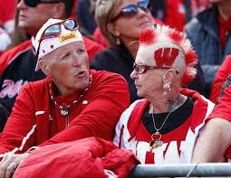
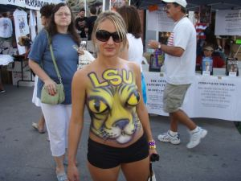
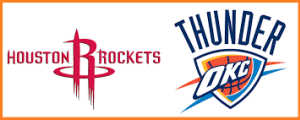
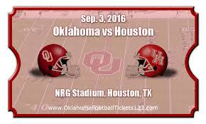
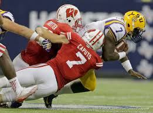
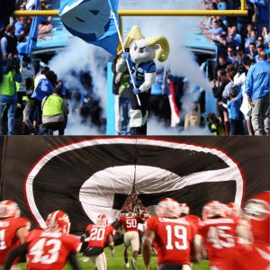
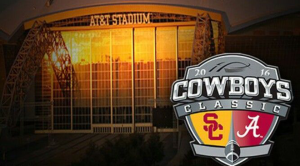

Why I am Pumped for Week 1 of College Football and you Should be too
July 24,2016

These two know what I’m talking about.
If you’re like me, the football offseason is a dark time in your life. you no longer have something to look forward to at the end of the week. News reports no longer are filled with stories of underdogs overcoming all odds, miracle comebacks that defy all explanation, or pictures of crazy fans doing things to make their school both proud and embarrassed at the same time; instead you have to go back to the international media and hear about terrorism, or the impending election which will have you vote to hand over the control of the country to one of what many would consider the emotional equivalent of two small children. Sure you could pretend you care about basketball or baseball (or God forbid soccer… the thought makes me shiver), but will they ever really replace the hole that football has left in your life?

I’m not usually much for LSU fans, but some are so crazy it gets me excited… about football of course.
So when football starts approaching again it becomes hard to contain your enthusiasm. I’ve already started counting the days, 33 days at the time of this post, and aligning all of my GT and Alabama memorabilia in the annual ceremony of channeling all my energy to support my favorite teams for the upcoming year (remember it’s only crazy if it doesn’t work). This year my wait is to be rewarded with what could be considered as one of the greatest week ones in college football history.
To start off we get two international games to look forward to, Cal versus Hawaii (Technically played the Friday before the first week on Friday August 26th) in Sydney Australia and Georgia Tech versus Boston College in Dublin Ireland. These events are not only great for the recruiting of the programs involved but also help expand the football market overseas (gotta wonder why the NCAA is doing the NFLs job). While the matchups themselves may not be against top teams, they are teams that matchup well against each other and could prove to be some of the closest matchups of the week.
On Saturday we get a full lineup of neutral site matchups between top tier teams. Oklahoma and Houston kickoff at noon in NRG stadium where the NFL’s Houston Texans play, where Oklahoma will need to prove itself early against a Houston team that won the Peach Bowl last year against FSU.

no, not that Oklahoma v. Houston

yes, that Oklahoma v. Houston
At 3:30 the LSU tigers will begin their game against Wisconsin in “the frozen tundra of Lambeau Field”, Wisconsin looks to be fighting an uphill battle in this matchup against an LSU team that returns Heisman candidate Leonard Fournette. That said, if you’re a Packers fan you know that strange things often happen at Lambeau and it would not be wise to underestimate a team like Wisconsin that will have the support of their whole state behind them.

At 5:30 UNC and UGA go at it in the Georgia Dome. Both of these these teams are looking to prove themselves this year. UGA and their new head coach Kirby Smart will likely try to shove the ball down the throat of a UNC team that gave up 645 yards on the ground in their bowl game last year. UNC on the other hand is bringing in many young but talented players, and needs to establish their offense behind new QB Mitch Trubisky. Both teams have a lot of questions going into this year, and this matchup should not disappoint.

At 8:00 the primetime matchup between Alabama and USC will begin in the House that Jerry Built (AT&T Stadium in Dallas for everyone not in the know). USC has a new head coach, but as always has one of the most talented teams in the nation going up the National champs from last year. Alabama will look to stick to their winning ways, but USC could prove to be the hardest out of conference matchup Bama has faced outside of the Playoffs.

On Monday FSU will play Ole Miss in Orlando. Both of these teams are considered the second best in their respective conferences by many and will be desperate not to suffer a loss in their first game of the season.
Aside from all the matchups I listed above, we also have many out of conference games you would not typically expect to see until fall has fully set in. Missouri will strive in their match against West Virginia to prove that despite their struggles last year that they are not to be trifled with. UCLA and Texas A&M will butt heads in College Station. Clemson and Auburn will duke it out to prove their can only be one tiger team in the ACC (what do you mean Auburn is in the SEC? they sure don’t play like it). And we will see what we can expect out of Texas this year when Notre Dame comes to Austin.
Honestly their are more matchups I can list but I get light headed just thinking about all of these. I can’t think of a better way to kickoff the season. My only real concern is that the rest of the season may pale in comparison. Only time will tell, until then I’m going to climb back into my replica Buzz costume and continue getting more hyped (again, its only crazy if it doesn’t work).
-Logan Sandor